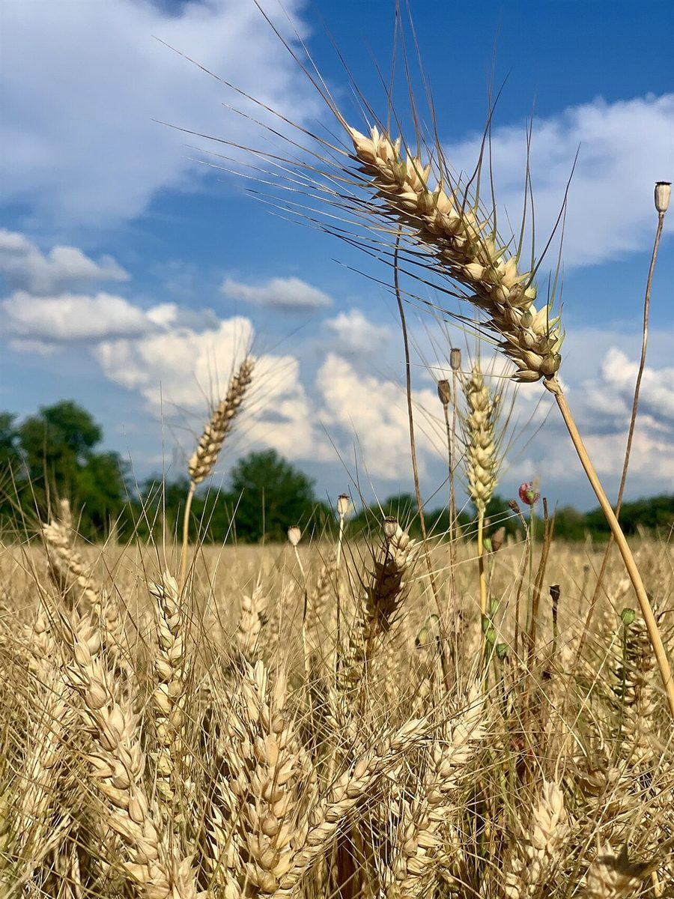
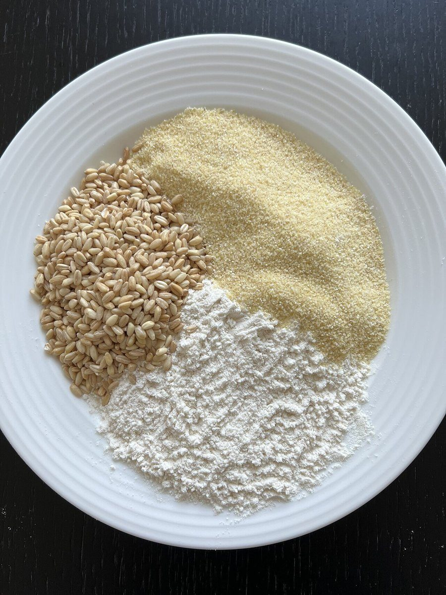
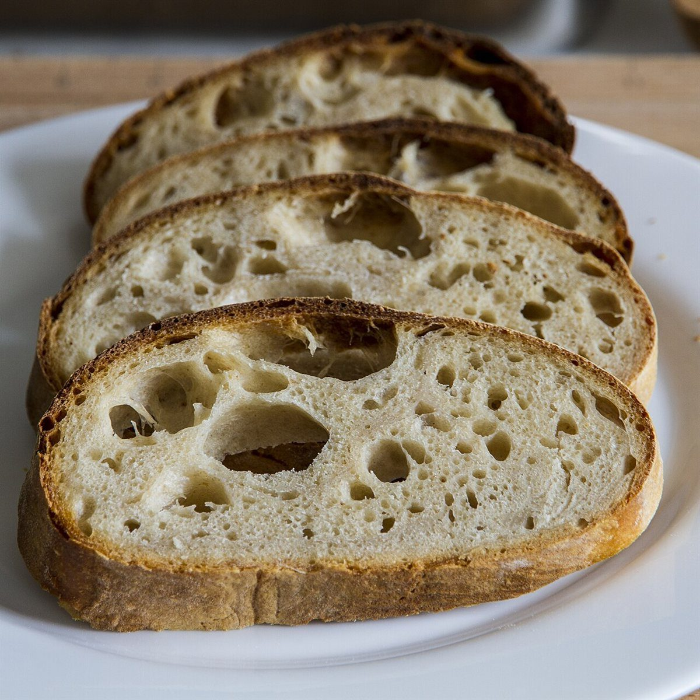
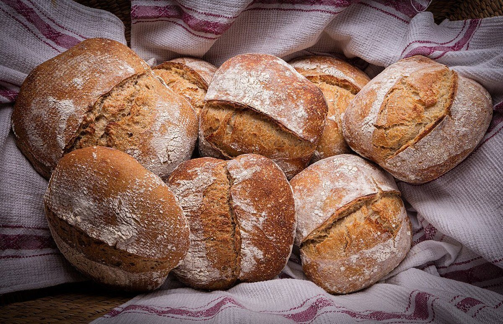

九マスの字見本
「麦」は7画、「人」は2画。合わせて9マス。
制作側の連想で、お店の理念・由来とは無関係です。屋号の読みや意味は確認していません。「麦」の7画ぶんを麦の7つの姿(畑・穂・粒・粉・板・火・焼き色)に、「人」の2画ぶんを「切る」「並べる」に見立てて、3×3のマスに並べました。写真は国外または撮影地不明のイメージ写真で、お店の商品や設備ではありません。
- 1麦

- 2麦

- 3麦

- 4麦

- 5麦

- 6麦

- 7麦

- 8人

- 9人

ご案内
お店のこと(確認できたものだけ)
| 所在地 | 〒865-0065 熊本県玉名市築地216 |
|---|---|
| 電話 | なし |
| 営業時間 | 準備中 |
| 定休日 | 準備中 |
| ご予約 | 準備中 |
| 駐車場 | 準備中 |
| SNS | Instagram @muginchu_bakery |